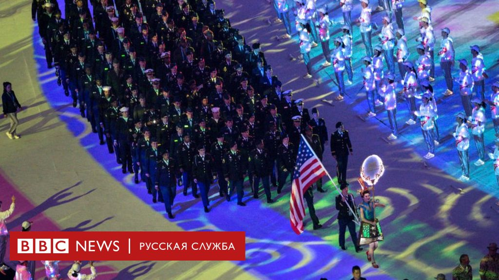
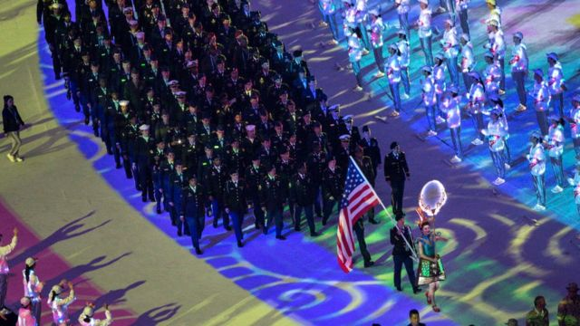

Китай начал пропагандировать версию о том, что коронавирус создали США.Это похоже на фейк

Подконтрольная китайскому правительству англоязычная газета Global Times опубликовала статью о якобы размещенной на сайте Белого дома петиции.Петиция, как пишет газета, требует от американских властей, чтобы они обнародовали информацию о лаборатории Пентагона, где ведутся исследования инфекционных заболеваний.
Global Times подчеркивает, что китайские пользователи интернете и эксперты хотят знать, связана ли лаборатория в Форт Детрик со вспышкой коронавируса.
Газета отмечает, что в последнее время многие сообщения о закрытии лаборатории в англоязычных СМИ были удалены, что лишь усиливает подозрения в связи между лабораторией и коронавирусом.
Таким образом в Китае продолжают развивать теорию представителя китайского МИДа Чжао Лицзяня о том, что хотя вирус и был обнаружен в Китае, занести его туда могли американские военные.
От обвинений США в политизации пандемии коронавируса китайские власти перешли к проталкиванию ничем не обоснованных теорий о том, как этот вирус мог быть занесен в Китай из Америки.
СМИ растиражировали мнение китайского дипломата Чжао Лицзяня (не подкрепленное никакими фактами), что вирус в Китай завезли американские военные еще в октябре прошлого года.
'Когда в США появился 'пациент зеро'?- написал в 'Твиттере' Чжао, причем отдельно по-английски и по-китайски.- Сколько людей заражено?В каких больницах они находятся?Может, это сама американская армия занесла эпидемию в Ухань?Проясните!США обязаны объясниться!'
Когда Чжао говорил об американских военных, он имел в виду Всемирные военные игры, которые состоялись в Ухане в октябре прошлого года.Пентагон отправил на игры 17 команд, в которые входило более 280 спортсменов.С тех пор американское военное ведомство подтвердило несколько случаев заражения своих военных в Южной Корее и Италии, но ни один из этих случаев не связан с участниками октябрьских Игр.
Между тем заявления Чжао были растиражированы популярной в Китае соцсетью Weibo и к полудню пятницы были просмотрены более 160 млн раз.
В ту же пятницу, на регулярном брифинге в китайском МИДе другой представитель министерства Гэн Шуан не стал комментировать предположения о том, что высказывания его коллеги политизируют кризис и отражают официальную линию партии, а вместо этого обрушился на американских чиновников и законодателей, заявив, что они занимаются 'очернительством и нападками' на Китай.
'Мы категорически возражаем против такого подхода, - заявил Гэн Шуан.- На самом деле, у международного сообщества и в самих США имеются разные взгляды на источник вируса.Я же всегда говорил, что с точки зрения Китая это сугубо научный вопрос, который требует научного и профессионального подхода'.
Posted On: 2020-03-15T21:00:00

Content Date: 2020-03-15
Download Date: 2021-03-17
Document ID: L0C0499TI